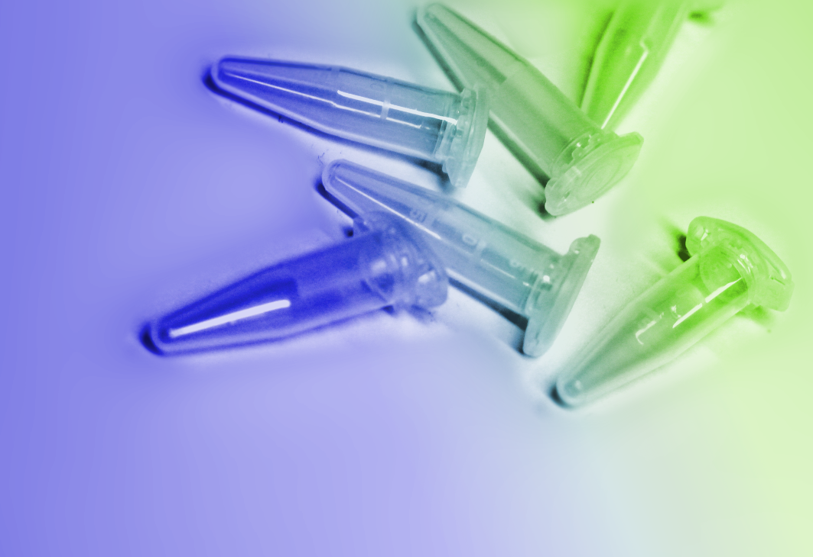
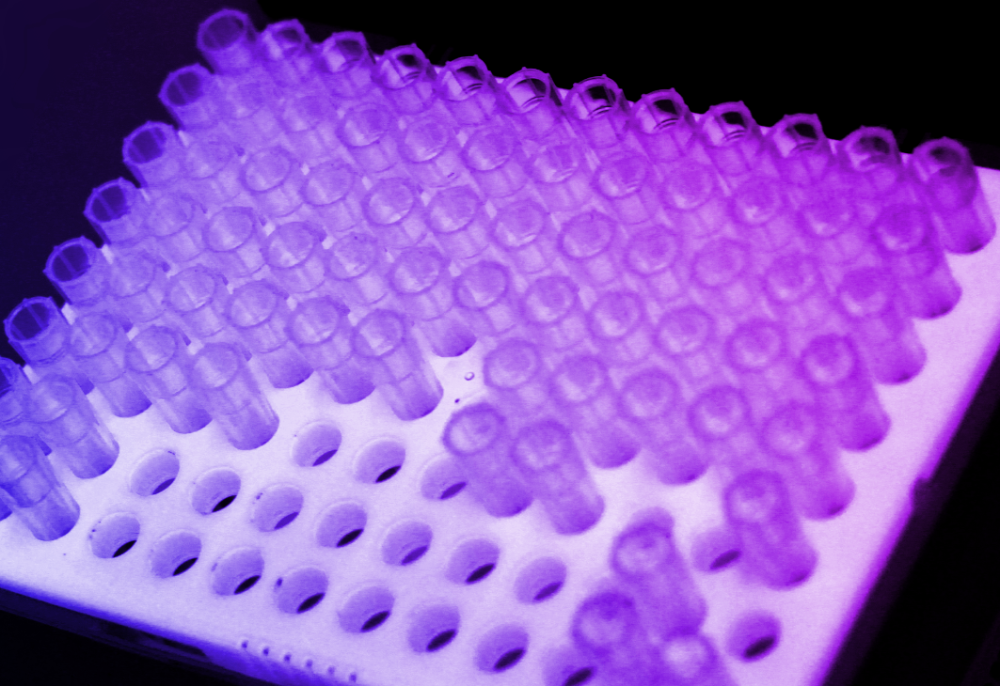

Plasmid DB an easy solution for maintaining a plasmid collection
As plasmids are an essential tool for molecular biologists, the collection can grow fast.

A user-friendly repository for plasmid data
Group members can input detail on the plasmids they constructed through the web interface.

Plasmid DB is open source.
Want to extend or improve Plasmid DB? You can! Grab the source from GitHub and start coding.